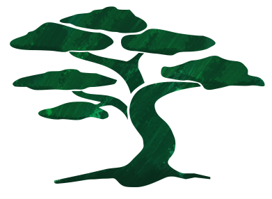

pinejs
Tiny, yet powerfull responsive multilevel navigation component. Easily customizable, so it can be used on any website.
Tiny, yet powerfull responsive multilevel navigation component. Easily customizable, so it can be used on any website.
Installation of Pine is quite easy, just follow steps below and you will be able to get the plugin up and running.
Link JS plugin:
html
<!-- Put this right before the </body> closing tag -->
<script src="pine/javascripts/pine.js"></script>
Link CSS:
html
<!-- Put this in the <head> -->
<link rel="stylesheet" href="dist/stylesheets/pine.css">
Add markup:
html
TODO: code
<div id="nav" role="navigation" class="pine pine-horizontal">
<ul>
...
</ul>
</div>
Hook up the plugin:
html
<!-- Put this right before the </body> closing tag -->
<script>
$('.pine').pine()
</script>
Customizable options:
javascript
$('.pine').pine({ // Selector
largeDisplayStart: '600px', // Custom JS Breakpoint
transitionMobile: 'fx-toggle', // Effect for 'Mobile' View
transitionDesktop: 'fx-hover-fade' // Effect for 'Desktop' View
})
bower?
TODO MS/MM
Pine.JS code is Mobile First and therefore a large part of the code is unavailable for Explorer 8 and older. You can choose from two solutions:
1) Respond.js - (preferred solution)javascript that can arrange for support Media Queries in these older browsers. It is a standard way which uses Bootstrap itself. Just add Respond.js in the HTML <head> just after CSS files:
```html
```
2) pine-ie8.css - if Respond.js does not fit your needs, add this CSS file in your HTML <head>. It contains all of the code hidden in the Media Queries:
html
<link href="css/pine-ie8.css" rel="stylesheet">
Simple CSS implementation:
LESS implementation:
PineJS comes with common tools, which help you to easily customize it and make you own builds. GruntJS is used for the build process. If you already have it, you are ready to go. Otherwise you need node and npm on your machine. Installation of Grunt is described in Getting Started Tutorial.
After you've set up the environment, use npm install to get all dependencies. To build the project, enter the following at the terminal:
sh
grunt
Grunt can also be used to monitor files and re-build the project on each change. For this we use Grunt's watch task:
sh
grunt watch
Next time you change the file, Grunt will perform all build tasks.
Martin Staněk (@koucik) & Martin Michálek (@machal)